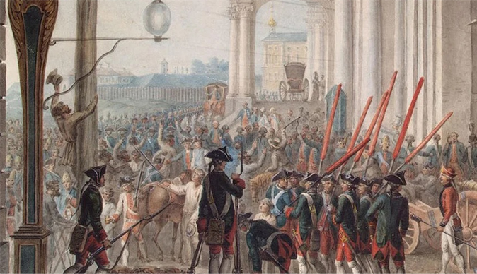

Об эпохе

1725-1762 гг. период эпохи дворцовых переворотов. В этот период происходила частая смена правителей, нередко насильственным образом и при участии гвардии и знати.
Причинами эпохи дворцовых переворов являются:
- указ Петра о престолонаследии. Пётр мог сам определять будущего правителя, но он не успел этого сделать.
- возросшая роль гвардии и новой знати (''птенцы гнезда петрова'')